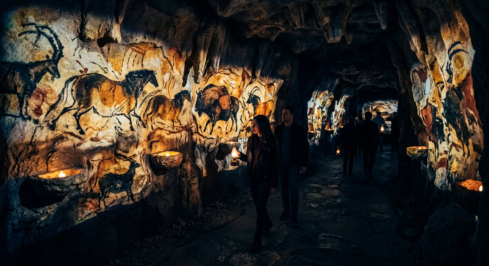
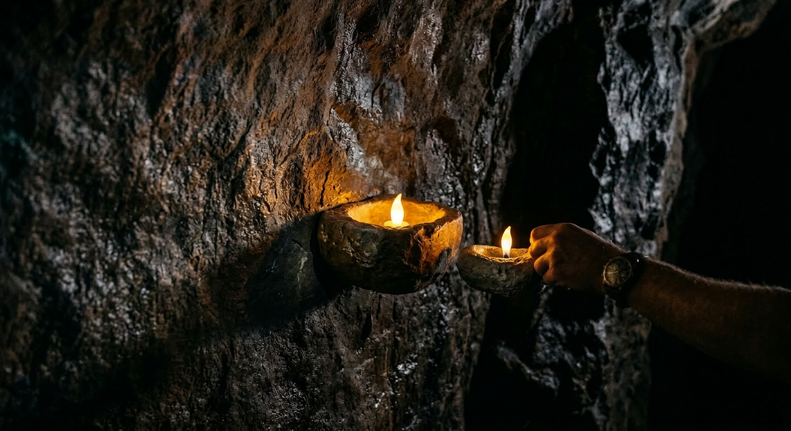
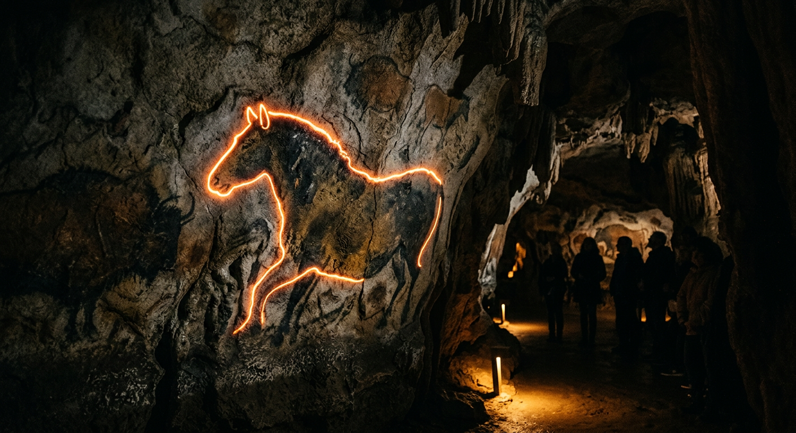

L'Expérience
Trois Espaces Consécutifs
La Galerie des Répliques

Un côté de la galerie présente 3 à 4 sections de parois de grotte répliquées, correspondant à des sites réels : la Salle des Taureaux de Lascaux, la grotte Chauvet, et la frise des mammouths de Rouffignac. Les répliques sont fabriquées en fibre de verre avec des enduits minéraux, reproduisant fidèlement le relief de surface des roches réelles.
En entrant, la salle est plongée dans une quasi-obscurité totale. Les visiteurs prennent une lampe sur le présentoir — la lampe s'allume dans leur main. À côté du présentoir se trouve un bol en pierre, vide, attendant d'être allumé. Les visiteurs approchent instinctivement leur lampe ; la flamme simulée à l'intérieur du bol s'allume, vacillant de manière irrégulière en tons chauds. Au même moment, la porte de projection à l'entrée de la galerie s'ouvre lentement. Ce geste ne nécessite aucune instruction — il offre simultanément un début rituel aux visiteurs et leur enseigne que la lampe peut illuminer des choses dans l'espace.
Seul là où brille la lampe apparaît la lumière. Le reste reste dans l'obscurité — exactement dans la même condition que les peintres préhistoriques qui pénétraient dans ces grottes avec une seule lampe, ne pouvant voir que dans ce cercle de lumière.
Le long des parois de la galerie, 5 à 6 bols en pierre sont encastrés dans les surfaces de répliques. Tout visiteur s'approchant seul fait s'illuminer un bol — la LED à flamme simulée produit un vacillement naturel et irrégulier tout en éclairant la section adjacente de la peinture rupestre : les couleurs s'approfondissent, les détails émergent. Plus il y a de bols allumés le long du couloir, plus l'espace ressemble aux conditions de travail des peintres préhistoriques.

Environnement Sensoriel
À l'entrée, le parfum est celui du calcaire et du minéral, portant la fraîcheur caractéristique des grottes. Cela est contrôlé par un diffuseur olfactif à l'entrée, complètement isolé de l'air extérieur. Le système sonore maintient une couche ambiante profonde dans toute la galerie — la résonance des parois rocheuses, le bruit faible et distant de gouttes d'eau à intervalles, le murmure occasionnel d'un courant d'air — ne constituant pas d'événements sonores distincts, mais donnant à l'espace la bonne texture. Les pas y sonnent différemment d'une salle d'exposition ordinaire ; les visiteurs ralentissent instinctivement. Ces trois couches sensorielles — parfum, obscurité, son — établissent ensemble un espace sensoriel authentique.
Système d'Éclairage en Temps Réel
La position de la lampe est suivie en temps réel par des capteurs UWB ; le système de projection génère un éclairage correspondant sur la surface de la réplique en fonction des coordonnées. Parce que les répliques ont un véritable relief physique, la lumière arrivant sous différents angles produit différentes ombres en bas-relief — la texture de la roche est réelle, pas une simulation plane.
Il existe un type d'expérience dans les vraies grottes très difficile à reproduire dans des expositions statiques : de nombreuses peintures rupestres intègrent des lignes incisées qui sont presque invisibles sous la lumière directe, n'apparaissant que lorsque la lumière rase la surface à un angle bas et oblique. C'était intentionnel de la part des peintres préhistoriques — l'image se révèle selon l'angle de la lumière, pas comme une image fixe. Nous superposons une couche de projection en temps réel sur les surfaces de répliques de sorte que la direction de la lampe affecte directement la direction de la lumière et de l'ombre sur la paroi. Lorsque les visiteurs déplacent leur lampe, certains détails sur la surface rocheuse émergent progressivement de l'obscurité. Cette expérience n'est normalement disponible que pour ceux qui marchent dans de vraies grottes avec une torche — nous l'apportons dans l'espace d'exposition.
Deux Types d'Événements Déclencheurs
-
Commentaire Murmuré
Lorsqu'une lampe s'attarde devant une section de peinture rupestre pendant plus de 8 secondes, un murmure spatial est déclenché depuis la direction de la peinture, décrivant un détail spécifique de cette peinture. Le langage utilise des syllabes inventées avec une variation rythmique et tonale ressemblant à la structure d'une vraie parole, mais n'appartenant à aucune langue existante. Les auditeurs ne peuvent pas comprendre le contenu littéral mais peuvent ressentir l'émotion et l'intention. Après la fin du son, la zone de la peinture brille brièvement d'un reflet façon braise, puis s'estompe.
-
Activation Animale
Lorsqu'une lampe s'approche très près d'un animal peint, une animation de traçage de contour est déclenchée : une ligne lumineuse commence à la tête et parcourt le contour pendant 2 à 3 secondes, couvrant tout le corps comme s'il était redessiné, puis émet une impulsion de braise avant de s'estomper en 2 secondes. Le cheval de Lascaux a six pattes, l'aurochs en a huit — c'était la façon des peintres préhistoriques d'exprimer le mouvement par de multiples membres. Lorsque le cheval à six pattes est déclenché, ses six pattes sont tracées en séquence correspondant au rythme de ses foulées ; le sens du mouvement émerge naturellement au cours du processus de traçage.

À l'extrémité de la Scène 1, lorsqu'un visiteur se dirige vers la zone de sortie et fait une pause, une projection d'empreintes au sol apparaît — un ensemble d'empreintes humaines et de traces animales s'étendant depuis l'extrémité de la galerie vers l'entrée de la Scène 2, guidant les visiteurs à suivre.
Contenu Caché : Symboles Géométriques
Les vraies peintures rupestres contiennent de nombreux motifs géométriques de signification inconnue — spirales, tableaux de points, symboles en forme de grille — que les spécialistes n'ont pas pu expliquer. Ces mêmes symboles sont cachés dans les parois de répliques de l'espace d'exposition, mais sont complètement invisibles à des angles d'éclairage normaux. Ce n'est que lorsqu'une lampe à huile est approchée très près à un angle très bas et oblique que les symboles émergent de la surface. Un signal audio subtil signale la découverte ; le symbole brille brièvement, puis s'estompe. Au total, 5 symboles sont cachés dans les trois scènes, répartis à différents endroits.
L'Amphithéâtre

L'espace circulaire dispose d'une surface de projection continue à 360°. Quatre directions correspondent à quatre saisons, fonctionnant simultanément :
Une jument et son poulain sortent des profondeurs de l'image ; un troupeau de cerfs migre vers la droite
Les bisons se rassemblent en troupeaux denses, les taureaux de grande taille, avec un banc de saumons nageant en dessous
Deux cerfs mâles se font face, bois entièrement déployés, en confrontation
Animaux épars, empreintes de mains superposées sur la roche, symboles géométriques dispersés
Les quatre saisons coexistent dans cet espace circulaire. Les visiteurs se dirigent vers la direction qui les attire, entrant dans le tableau de cette saison.
Les animaux sur les parois semblent flotter sur la surface rocheuse ; lorsqu'une lampe s'approche, ils projettent des ombres qui se déplacent avec la source lumineuse — calculées en temps réel, suivant la lampe du visiteur. Chaque espèce réagit différemment à la lumière : le poulain s'arrête avec curiosité et tourne la tête vers la source lumineuse ; le bison le plus proche du troupeau réagit d'abord avec vigilance, qui se propage vers l'arrière du groupe ; le cerf s'approche lentement d'un visiteur qui tient sa lampe immobile. Dans la section Hiver, les empreintes de mains brillent faiblement lorsqu'une lampe s'approche ; les visiteurs peuvent approcher leur main de la paroi et une caméra capture la forme de la main, superposant leur propre empreinte à côté des anciennes — elle s'estompe lentement après environ 60 secondes.
Au centre de l'espace circulaire, une projection semi-transparente montre plusieurs silhouettes humaines préhistoriques. Ils sont assis autour d'un petit feu — regardant les flammes, traçant des formes dans le sol avec leurs doigts, debout à écouter des sons lointains. Ils ne regardent pas les visiteurs, ne répondent à aucune action, mais existent simplement dans leur propre temps. Les visiteurs marchent autour d'eux, les illuminant avec leurs lampes.
Sortie : Belvédère VR

La zone de sortie dispose de 6 viewers VR suspendus disposés en demi-cercle, formant une petite plateforme d'observation. Enveloppés dans des boîtiers en métal sombre, chaque visiteur colle ses yeux à un viewer et regarde — comme avec un télescope — pendant environ 40 secondes. Les 6 personnes entrent et sortent ensemble, sans attente.
Dans le viewer se trouve une vidéo stéréoscopique à 360° : le point de vue se situe à l'entrée de la grotte, regardant vers un terrain préhistorique ouvert — une large vallée fluviale, une prairie ambrée, un troupeau de chevaux sauvages se déplaçant lentement au milieu de la scène, un groupe de mammouths avec leurs petits traversant la plaine au loin. En se retournant, une faible lueur de feu brille encore à l'intérieur de la grotte.
Pas de narration. Pas de commentaire. Juste ce monde, présent en silence.
Le parfum ici a changé — plus de calcaire, mais de l'herbe mouillée et de l'air frais. Un point de retour est installé à la sortie. Les visiteurs remettent leur lampe, et elle s'éteint.
Sortie : Objets Numériques Collectibles
Après avoir rendu la lampe, les visiteurs scannent un QR code à la sortie pour accéder à un mini-programme WeChat et récupérer leur objet numérique collectible de l'expérience. Le système de collectibles fonctionne sur trois niveaux :
-
Édition Quotidienne
Chaque visiteur reçoit le collectible de base du jour dès son entrée, mettant en vedette un motif d'animal de grotte. 12 thèmes se succèdent mensuellement tout au long de l'année (cheval sauvage, bison, mammouth, ours des cavernes, rhinocéros laineux…), avec des éditions limitées publiées aux solstices, équinoxes et autres dates spéciales. Les différents visiteurs reçoivent différents collectibles selon la date de leur visite, créant une incitation naturelle à collectionner et revenir.
-
Édition Explorateur
Attribuée pour la découverte de symboles géométriques cachés. Chacune porte un numéro de séquence de découverte (« Vous êtes la 237e personne à trouver ce symbole »). Les numéros plus bas sont plus rares ; les premiers visiteurs acquièrent naturellement une plus grande valeur de rareté.
-
Récompense Collection Complète
Rassembler toutes les éditions animales du mois en cours ou trouver les 5 symboles géométriques débloque un collectible animé de scène de grotte complète. Tous les collectibles peuvent être partagés directement sur les réseaux sociaux, générant une diffusion organique.